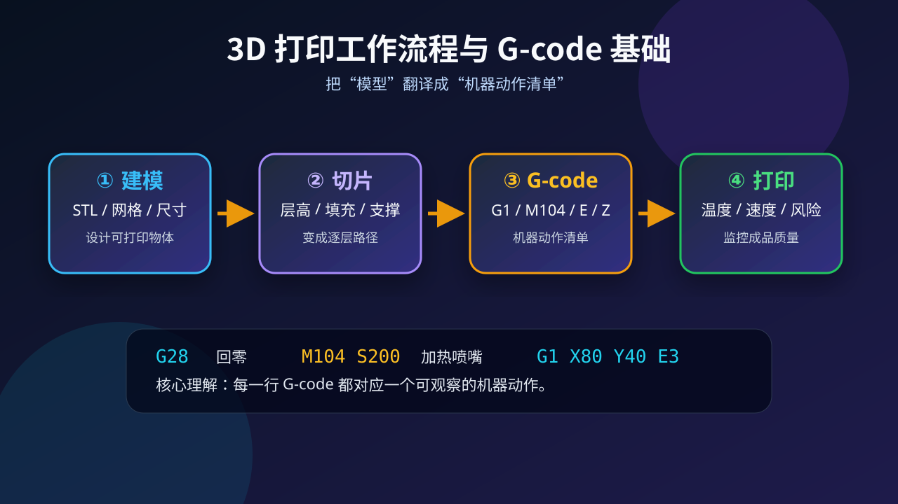
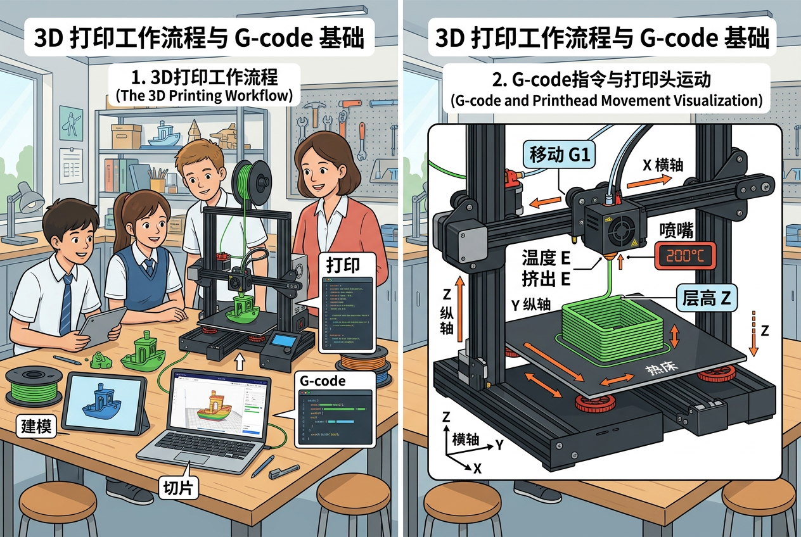

知识结构主图：围绕“模型如何变成机器动作”展开，呈现建模、切片、G-code、打印监控四个核心环节。
学习目标
完成本课后，你能用“流程语言”和“代码语言”解释一次 3D 打印。
1说清流程
能按顺序解释建模、切片、生成 G-code、打印监控四步。
2读懂指令
能识别 G28、M104、G1、X/Y/Z/E/F 等常见字段含义。
3调参判断
能根据温度、速度、层高、挤出量判断打印风险。
4设计方案
能为一个小物件写出简化版打印计划和关键 G-code。
为什么学：从会点打印到会诊断机器
你已经知道 3D 打印机可以把模型变成实物，但问题是：当打印失败时，只会点“开始打印”的人不知道错在哪里。所以学 G-code，是为了像小工程师一样读懂机器动作，判断是温度、速度、层高，还是挤出量出了问题。
And：已有经验
你可能见过 STL 模型、切片软件和 3D 打印机，也知道打印需要等待很多层慢慢堆叠。
But：真实问题
模型翘边、断料、拉丝、首层不粘时，界面只给出参数，机器不会用人话告诉你原因。
Therefore：本课新知
把 G-code 当成“动作清单”来读，就能从代码反推喷嘴运动、加热状态和挤出风险。
前测：你能读懂机器语言吗？
不用背命令，先判断它们分别在控制什么。
问题 1：G-code 最像下面哪一种东西？A. 3D 模型文件本身
B. 打印机动作清单
C. 图片压缩格式
问题 2：G1 X50 Y20 E2.5 中，E 通常表示什么？A. 错误编号
B. 结束打印
C. 挤出材料的量
模块一：3D 打印不是一步完成
从“想法”到“成品”，中间有一次关键翻译：切片软件把几何模型翻译成 G-code。

①建模
用 Blender、Tinkercad 或 CAD 软件设计模型，导出 STL 或 3MF。这里的重点是“形状是否封闭、尺寸是否合理”。如果模型有破洞，打印机无法判断哪里是内部、哪里是外部。
②切片
把模型切成很多层，设置层高、填充率、支撑、温度和速度。切片不是简单切开，而是在为喷嘴规划每一层的行走路线。
③生成 G-code
切片软件输出逐行指令，告诉喷嘴在哪里移动、什么时候挤出、以多快速度运动。G-code 就像给机器看的剧本，每一行都要能变成一个动作。
④打印监控
观察首层附着、温度稳定、材料挤出和模型变形风险。真正的调试不是盲目重打，而是根据现象回到参数和代码中找原因。
语音导学：下方音频模块会按“流程 → 指令 → 模拟器”三段连续讲解。
过程动画：一行 G-code 如何变成喷嘴动作
视频展示从建模到打印监控的四个 beat，并把 G-code 片段和喷嘴路径同步呈现。
模块二：G-code 的三类关键信息
不需要一次背完所有命令，先掌握“动作—参数—风险”的读法。
| 字段 | 含义 | 机器动作 |
|---|
| G28 | 回零 | 找到坐标原点 |
| M104 S200 | 喷嘴 200℃ | 准备熔化材料 |
| G1 X/Y/Z | 直线移动 | 喷嘴到达指定位置 |
| E | 挤出量 | 推出塑料丝 |
| F | 速度 | 控制移动快慢 |
小练习：哪一行更可能用于“加热喷嘴”？A. M104 S200
B. G1 X10 Y10
C. G28
模块三：G-code 参数互动模拟器
调节温度、速度、层高和挤出量，看机器路径与代码片段如何一起改变。
综合任务：设计一个钥匙扣打印计划
项目目标：制作一个 50mm × 25mm × 4mm 的姓名钥匙扣。请扮演创客工程师，用参数和指令说明你的打印方案。
你的交付物
1. 画出模型草图，标注长宽高；2. 选择层高、填充率和材料；3. 写出 4 行关键 G-code 并解释；4. 写一条风险检查建议。
Level 1 基础巩固 ⭐
写出 G28、M104 S200、G1 X50 Y20 三行指令分别对应的机器动作。
Level 2 能力应用 ⭐⭐
给钥匙扣选择层高和速度，并说明为什么这个参数能兼顾时间与质量。
Level 3 迁移挑战 ⭐⭐⭐
如果首层翘边，写出你会调整的两个参数，并说明它们如何改变机器动作。
开放追问：如果首层总是翘边，你会优先检查哪两个参数？温度 + 首层速度
模型颜色 + 文件名
常见错误与记忆锚点
记忆口诀：G 管几何运动，M 管机器状态，X/Y/Z 定位置，E 管挤出，F 管速度。你可以把 G-code 想象成“外卖路线单”：坐标是去哪里，速度是多快去，E 是送多少材料。
易错点 1：把 STL 误认为 G-code
STL 描述形状，G-code 描述动作。错因诊断：如果只看到模型外形，那还没有进入机器执行层。
易错点 2：把 G 和 M 搞反
G1、G28 通常和运动有关；M104、M140 通常和机器状态有关。注意区分“去哪里”和“机器设成什么状态”。
易错点 3：忽略参数联动
速度快、温度低、挤出少会共同导致欠挤出。不要只盯一行代码，要看一组参数如何一起影响成品。
后测：从代码反推动作
G1 X100 Y20 Z0.2 E4.5 F1200 最完整的解释是？A. 删除模型
B. 设置热床温度
C. 只移动到 X100
D. 喷嘴以指定速度移动到坐标位置，同时挤出材料
小结：G-code 的本质是“动作翻译”
看见它
模型先被切成很多层，再生成喷嘴逐层移动路径。
拆开它
一行 G-code 通常包含命令 + 坐标 + 温度/速度/挤出参数。
迁移它
会读 G-code 后，你能更快定位温度、速度、挤出不足等打印问题。
3D打印技术概述
3D打印是一种通过逐层堆积材料来制造三维物体的技术。与传统的减材制造（如雕刻）不同，3D打印属于增材制造。生活中常见的3D打印应用包括个性化手机壳、义齿、建筑模型等。例如，牙科诊所使用3D打印机快速制作牙模，比传统石膏取模更精准高效。该技术核心优势在于可快速实现复杂结构（如蜂窝状减重设计），而传统工艺难以完成。初中阶段需理解其‘分层制造’本质——将三维模型‘切片’为数百层二维图形，逐层打印堆叠成形。
3D打印工作流程四步骤
完整流程包含：建模→切片→打印→后处理。第一步建模指用CAD软件（如Tinkercad）设计三维模型，类似用乐高数字设计师搭建虚拟积木。第二步切片是将模型导入Cura等软件，转化为打印机识别的G-code指令，如同把蛋糕切成可操作的薄片。第三步打印时喷嘴根据G-code移动，PLA塑料丝被加热至200℃后挤出成型。例如打印一个齿轮，每层厚度通常设置为0.1-0.2毫米。最后后处理包括去除支撑结构（如用钳子剪掉）、砂纸打磨等。关键要理解切片是连接数字模型与实体成品的桥梁。
G-code基础语法解析
G-code是控制3D打印机的标准化指令，由字母+数字组成。例如‘G1 X10 Y20 E5’表示：直线移动（G1）到坐标(10,20)并挤出5毫米耗材。常见指令分三类：运动指令（G0/G1快速/线性移动）、温度控制（M104 S200设置喷嘴200℃）、辅助功能（M106开启散热风扇）。学科联系：类似Scratch中的运动积木，但更精确到毫米级。典型打印起始代码包含回原点（G28）、预热（M190 S60加热热床）、初始挤出（G92 E0重置挤出机计数）等。理解‘G’代表准备指令，‘M’代表杂项指令是记忆关键。
喷嘴运动与坐标系统
3D打印机采用笛卡尔坐标系（X/Y/Z三轴），例如Ender-3机型打印范围为220×220×250mm。X轴控制左右移动，Y轴控制前后，Z轴控制升降。当执行‘G1 Z0.2 F1200’时，喷嘴以1200mm/min速度抬升到0.2mm高度。生活类比：类似用热胶枪画画，但需严格按坐标移动。特殊的是挤出机坐标E，记录耗材挤出量（如‘G1 E10’挤出10mm）。调试时常用‘G0 X100 Y100’测试机械运动是否顺畅，若出现层错位往往是皮带松动导致坐标失准。掌握‘右手定则’（拇指=X，食指=Y，中指=Z）可快速判断方向。
温度参数的科学设置
不同材料需要特定温度：PLA通常190-220℃，ABS需230-250℃。温度过低会导致挤出困难（如卡塔声），过高可能烧焦（冒烟）。例如打印PLA小夜灯时，首层设为210℃增强附着力，后续降至200℃提高精度。热床温度（M140）也关键：PLA需60℃防翘边，PETG要80℃。学科联系：如同化学实验中控制水浴温度，误差超过±5℃就会影响结果。常见错误是未预热直接打印（应先用M109 S200等待升温），或打印完成后立即断电（应等降温至50℃以下，用M107关闭风扇）。温度曲线可通过Pronterface软件实时监控。
支撑结构与悬垂设计
当模型有大于45°的悬空部分（如人像的伸展手臂）时需添加支撑，类似建筑中的脚手架。Cura软件中可设置支撑密度（通常10%-20%）、接触面距离（0.1mm易拆除）。例如打印拱桥模型时，桥洞下方会自动生成网格状支撑。学科联系：对比生物课的骨骼与肌肉关系——支撑是临时‘骨骼’。高级技巧包括：树状支撑（更省材料）、只从基板生成（避免模型内部残留）。误区是过度使用支撑导致浪费（可尝试旋转模型角度减少悬垂），或间距过大造成支撑失效（出现‘塌陷’的棉花状结构）。
打印失败诊断与解决
常见问题及对策：①第一层不粘——调平热床（用A4纸测试喷嘴间隙）、涂固体胶；②层间开裂——提高打印温度5℃或启用‘回抽’功能（M207 S1mm）；③模型顶部粗糙——增加顶层厚度（设置≥6层）或降低打印速度。例如学生打印立方体时出现边角翘起，往往是热床温度不均导致（可用红外测温枪检查）。学科联系：类似调试机器人巡线程序，需系统性检查传感器（这里对应温度传感器）、机械结构（皮带张力）、代码参数（G-code回抽值）。记录‘温度-速度-冷却’三要素的调整日志是进阶关键。
3D打印的跨学科应用
该技术正革新多个领域：①生物课打印细胞模型（如线粒体立体结构）；②物理课制作斜面实验小车；③美术课实现雕塑数字化。例如地理课上，将DEM地形数据导入Blender生成3D地图打印。未来趋势包括：食品打印（NASA研发太空披萨）、医疗打印（已有人工耳廓成功案例）。设计挑战：让学生用Tinkercad创建一个结合齿轮（物理）与DNA双螺旋（生物）的跨学科模型，思考如何设置G-code实现两者不同精度的同步打印（如齿轮层高0.15mm，DNA部分0.1mm）。
📋 课前诊断
1. 你观察过哪些3D打印物品？它们有什么共同特点？2. 如果用普通A4纸打印立体模型会遇到什么困难？
✅ 达标检测
1. 请写出让喷嘴移动到(50,50)坐标并挤出3mm耗材的G-code指令。2. 打印ABS材料时，为什么热床温度要比PLA设置得更高？
💡 错因诊断
误区：认为G-code可以直接手工编写全部指令。错因：忽略切片软件自动生成大部分代码的作用。诊断：应理解手工修改主要用于调试特定参数（如温度），而非重建整个打印路径。
🚀 迁移挑战
迁移挑战：分析3D打印笔（如3Doodler）的工作原理，对比其与专业3D打印机在G-code控制、温度管理等方面的异同，撰写一份对比报告。
📝 真题练习
先独立作答，再点选项查看对错与错因。
选择题 1
3D打印机读取的指令文件通常是哪种格式？
选择题 2
下列哪项是3D打印工作流程的正确顺序？
选择题 3
G-code中控制喷头温度的指令是？
填空题 1
3D打印的____步骤会将三维模型转换为分层指令
查看答案与解析
答案：切片
切片软件将模型切割为二维层并生成G-code
填空题 2
G-code中G1指令表示____运动
查看答案与解析
答案：直线插补
G1控制打印机头做直线移动
💡 概念检测（互动）
关于打印平台调平的正确理解是？
🔬 探究层高对打印质量的影响
使用相同模型测试0.1mm/0.2mm/0.3mm层高
🗺️ 知识图谱：3D 打印工作流程与 G-code 基础 — 3D 打印工作流程与 G-code 基础